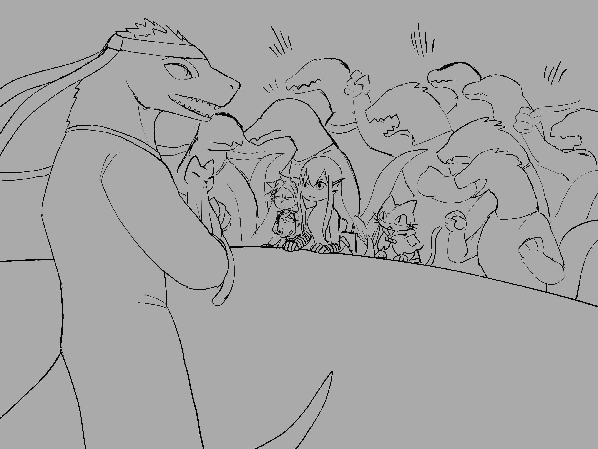

Chapter 3: New Dawn
The Unacknowledged Child


The Unacknowledged Child
15049.05.20
聽見樓上的聲響，羅羅悄悄走上樓，查看狀況。只見拉比倒臥在牆邊，摀著滲血的胸口。一隻蟑螂正爬在他臉上。很快地，雷亞爬了下來，變回蜥蜴人的模樣，然後為拉比做簡單的傷口處理，便把他扛下樓了。
見到拉比的狀況，瑪莉貝爾跟隨著雷亞與羅羅，一同送他到附近的診所去。醫生快速處理後，表示他不確定需要多久時間拉比才能復原。拉比低聲說著醫藥費他出即可，要冒險者們不要擔心。隨後，冒險者三人便啟程回到酒館去了。
酒館除了冒險者外，只剩下一桌客人。為了讓胡里恩早點休息，冒險者們決定上樓回到客房內。他們討論著明天的計劃，認定現在最重要的是睡飽，然後輪班守夜。
瑪莉貝爾輪第一班。看著羅羅回到自己房間，其他人則漸漸睡去，瑪莉貝爾拿出她的日記本開始抄寫。過了一段時間，她叫醒了鑰來接班。
鑰守著夜，突然發現窗外似乎看見人影。時間已近午夜，還有人點著火把走來走去，讓她有些警戒。她喚醒了毛毛，毛毛一看，決定去跟蹤他們。他小心翼翼地壓低音量，躡手躡腳地竄到了一樓，然後跟上這兩名可疑的人影。這兩人一身漆黑，看不出他們的派系。口中說的則是關於明天辯論會的場地安排，以及「槍擊」的字眼，很顯然和教授的刺殺計劃有所關聯。跟著兩人，毛毛來到了一個大廣場，廣場已經準備好大部分辯論會的場地佈置了。看著兩人離開後，毛毛竄上舞台調查。眼下沒有看到明顯能狙擊的位置，最後毛毛把主持人講台的抽屜拿走，作為戰利品，帶回酒館。
15049.05.21
毛毛接續輪班守夜，最後他找了其實不需要睡覺的羅羅來守夜。羅羅坐在房間的正中央冷冷等著，看著陽光逐漸升起。
早上來到樓下吃了早餐，冒險者們問著胡里恩等等是否也會來到辯論會現場。胡里恩則表示得看生意如何，以及老闆是否放行。
冒險者們決定在上午兵分兩路：毛毛和鑰去拜訪皮尼歐教授，告知他們聽說刺殺計劃的手段是槍殺這件事；雷雅、羅羅和瑪莉貝爾則先到辯論會會場查看是否有可疑人物，以及佔好位置。
對於毛毛和鑰的來訪，皮尼歐教授簡單致意，卻也無法多做些什麼。毛毛詢問如果皮尼歐教授遇害，新書院該怎麼辦？教授說新書院會有人繼承她的意志，儘管現在還沒有指定的繼承者，這裡的大家都是值得信賴且能力優秀的夥伴。對於如何防範槍擊，教授則說他們有請入場的衛兵檢查是否有大型可疑兵器，畢竟這種「槍枝」大小大概有半個人的身高，沒那麼輕易藏起來的。對於教授有些「聽天由命」的態度，毛毛和鑰有些擔心，但也不便多說什麼，就先告辭了。
另一方面，雷亞、羅羅和瑪莉貝爾先到了辯論會會場。此時已經有一些居民來到會場，先佔走了較為舒服的位置。並沒有人特別卡在最前面的位子，大家比較傾向找草皮較軟的位置坐下，就像野餐一樣。瑪莉貝爾開始東繞西繞，觀察不同派系人們口中說的話，並記錄下來。不久後，毛毛和鑰也來到了現場，冒險者們先卡了接近舞台前方的位置坐下。
中午時段，各派系的領導者陸續進場，大家親切的互打招呼，彷彿不是競爭者一般。彭薩公會長、利斯達上校和皮尼歐教授依序坐到舞台上的位置。一名刻意避開政黨色彩衣著的中年蜥蜴人男子則站到了主席台後方。他看了看消失的抽屜，皺了皺眉，只好把文件放在主席台的檯面上。
午餐後，辯論會正式開始。主席台後方的男人自我介紹是報社「克萊芬之聲」的資深記者，瑞森。接下來的辯論會分為三個環節，會依照抽籤的順序，依序讓彭薩公會長、利斯達上校，以及皮尼歐教授發言。第一個環節是讓候選人對台下民眾們發表自己的政見與喊話；接續的是三名候選人分別可以對一名其他候選人提問，讓對方回答；最後則是接受台下民眾的提問。很快地，辯論會開始了。
冒險者們借機觀察附近的民眾，沒有找到可疑的人士。雷亞決定化身為貓，竄到舞台後方。布幕後是鎮守的衛兵們，各個嚴肅而專注，但當他們看到貓時，都露出了興奮而開心的表情，紛紛玩起貓。瑪莉貝爾也竄到附近去，似乎是在繼續調查民眾。鑰和身邊的民眾談天，試圖瞭解民情。
隨著辯論會的發展，冒險者們感到無助。再怎麼看，都看不出有什麼可疑的威脅，根本幫不上忙。但當然，沒有發生憾事是最好的。化作貓的雷亞穿過了布幕，爬到皮尼歐教授的身邊，皮尼歐教授自在的把他抱起，放在腿上。雷亞試圖擋在教授胸前，若子彈射來，至少自己能幫忙擋住。但隨著候選人間的發言越發激烈，台下的群眾開始推擠騷動，皮尼歐教授也將貓咪放下，和其他候選人對峙。
來到了辯論會最後的環節。雷亞已化回原型，和其他冒險者們會合，擠在舞台前方。彭薩公會長與利斯達上校紛紛接受了台下群眾的發問，最後只剩下皮尼歐教授了。
一名身穿藍裝的年輕學生舉了手，皮尼歐教授微笑點了他。他認得這名學生曾上過他的課。「教授好，如果城市被仇恨包圍，我們還能相信理性嗎？」學生提問到。皮尼歐教授思忖了幾秒。「即使黑夜降臨，只要有人願意思考，曙光就會到來。」
「謝謝教授。」學生依然站著，他停了幾秒。「我願意追隨教授，成為第一道曙光。」
「砰！」現場陷入寧靜，只剩下煙硝味。皮尼歐教授倒在地上，胸口滿是血。
「新曙光！」學生舉起手上那把小型的槍械，抵在自己的太陽穴。然後隨著下一聲巨響，癱倒在地。
然後是尖叫聲、推擠，以及衝到舞台上的衛兵。
雷亞跳上了舞台，試圖用她所知的醫藥技巧拯救教授。「這不是我所想的曙光⋯⋯」教授留下最後一句話，便失去了意識。她的胸口硬生生被炸開了一個大洞，儘管知道這不是簡單醫療就能彌補的，雷亞還是死命搶救，然後遭到衛兵無情地推開。
舞台下各種推擠與吵鬧，殉道的學生被新書院的支持者們抬了起來。吵鬧聲逐漸集結，成了一致又整齊的「新曙光」吶喊。在睡眠術的施放下，學生們倒下，但又有新的支持者竄了上來，繼續將殉道者的屍體向舞台外抬走。
在「仇恨！」「自導自演！」「陰謀！」的喊聲下，一名蜥蜴人走上了舞臺。
「秘書長，你要帶領新書院繼續走下去嗎？你會是我們新的主席嗎？」帶著藍色頭巾的參謀，瓦羅恩，看了看舞台下，冷冷的回答。「不，我們不會有新的主席。我依然是秘書長。我很遺憾，但我們必須繼續前進。新書院！」雷亞試圖與瓦羅恩秘書長激辯，卻遭到秘書長輕輕一指，雙腿發麻而跪了下來。如今皮尼歐教授不在了，新書院在雷亞心中，也逐漸死去。
冒險者們看著瓦羅恩秘書長的冷靜，不禁發寒。這不像自己主子遇刺後該有的反應。
舞台下，瑪莉貝爾趁著殉道者的支持者們被法術睡眠之際，偷走了他行兇的槍械，偷偷藏在自己身上，然後往場外離開。鑰跳上舞台帶走被秘書長點暈的雷亞，然後大家朝著場外離開。
場外各種械鬥，冒險者們知道這時候應該避避風頭，決定先回酒館去。
「新曙光」的字樣開始在克萊芬散開來，喊聲、塗鴉，處處皆是。除此之外，各種謾罵、惡意的字眼也占滿了牆上。
其中一個塗鴉則抓住了冒險者們的視線：一個孩子的臉，上面有著不同色彩的光芒，像是擁抱多元的樣貌。而在這塗鴉下方，寫了一串字：「七彩男童」。
15049.05.20
Hearing the commotion upstairs, Roel quietly went up to see what had happened. He found Ravi collapsed against the wall, clutching his bleeding chest. A cockroach was crawling across his face. Soon Leah scurried down, shifted back into her lizardfolk form, gave Ravi some basic first aid, and then hauled him downstairs.
Seeing Ravi's condition, Maribel followed Leah and Roel as they brought him to a nearby clinic. After quickly treating him, the doctor said he was not sure how long it would take Ravi to recover. Ravi quietly said he could cover the medical costs himself and told the adventurers not to worry. After that, the three adventurers headed back to the tavern.
Other than the adventurers, only one other table of customers remained in the tavern. Wanting to let Hurian rest early, the adventurers decided to go upstairs and return to their rooms. They discussed their plans for the next day and concluded that the most important thing now was to get enough sleep and then keep watch in shifts.
Maribel took the first watch. As Roel returned to his own room and the others gradually drifted off to sleep, Maribel took out her journal and began copying things down. After some time had passed, she woke Kaname to take over.
While on watch, Kaname suddenly thought she saw figures moving outside the window. It was close to midnight, yet people were still walking around carrying torches, which put her on guard. She woke Fur, and after one look, Fur decided to follow them. He carefully lowered his volume, crept downstairs on silent feet, and tailed the two suspicious figures. They were dressed all in black, giving away nothing about which faction they belonged to. What they were talking about, however, concerned the setup of tomorrow's debate venue, along with the word "shooting," which was clearly connected to the plot to assassinate the professor. Following the two of them, Fur arrived at a large public square, where most of the setup for the debate site had already been completed. After watching the pair leave, Fur climbed onto the stage to investigate. He saw no obvious sniping position for the moment, and in the end he stole the host's podium drawer as a trophy and brought it back to the tavern.
15049.05.21
Fur continued the night watch, and in the end he asked Roel, who did not really need sleep, to take over. Roel sat coldly in the middle of the room, waiting as the sunlight slowly rose.
They went downstairs in the morning for breakfast, and the adventurers asked Hurian whether he would be at the debate venue later that day. Hurian replied that it depended on business and on whether the owner would let him go.
The adventurers decided to split into two groups that morning. Fur and Kaname would visit Professor Peneo and tell her that they had heard the assassination plan involved a shooting. Meanwhile, Leah, Roel, and Maribel would first go to the debate venue to look for suspicious figures and secure good spots.
Professor Peneo greeted Fur and Kaname simply, but there was not much more she could do. Fur asked what would happen to the New Academy if she were killed. The professor said that someone in the New Academy would inherit her will. Although no successor had yet been formally named, everyone here was a trustworthy and capable companion. As for how to guard against a shooting, she said they had arranged for the guards at the entrance to inspect attendees for large suspicious weapons. After all, this kind of "gun" was about half a person's height and not so easy to hide. Fur and Kaname were worried by the professor's somewhat fatalistic attitude, but it was not their place to press further, so they took their leave.
Meanwhile, Leah, Roel, and Maribel arrived at the debate venue first. Some residents had already come and taken the more comfortable spots. No one was especially trying to seize the front row. Most people preferred to find softer patches of grass to sit on, almost like they were out on a picnic. Maribel wandered back and forth, listening to what people from different factions were saying and writing it down. Not long afterward, Fur and Kaname also arrived, and the adventurers claimed seats near the front of the stage.
Around noon, the leaders of each faction arrived one after another, warmly greeting each other as though they were not rivals at all. President Bonza, Colonel Lisdar, and Professor Peneo took their seats on the stage in turn. A middle-aged lizardfolk man deliberately dressed to avoid any faction colors stood behind the podium. He noticed the missing drawer, frowned, and had no choice but to place his documents directly on the surface of the lectern.
After lunch, the debate formally began. The man behind the podium introduced himself as Ruisen, a senior reporter from the newspaper Voice of Clyphen. The debate would proceed in three segments. Following the order determined by drawing lots, President Bonza, Colonel Lisdar, and then Professor Peneo would speak in turn. In the first segment, the candidates would present their policies and appeals to the crowd. In the second, each candidate could ask one question of another candidate, who would then answer. The final segment would accept questions from the people in the audience. Very soon, the debate was underway.
The adventurers took the opportunity to observe the nearby crowd, but found no suspicious individuals. Leah decided to transform into a cat and slip behind the stage. Behind the curtain stood the stationed guards, all stern and focused, but the moment they saw a cat, they lit up with excitement and started playing with it. Maribel also drifted around nearby, seemingly continuing to gather information from the crowd. Kaname chatted with the people around her, trying to get a sense of public opinion.
As the debate unfolded, the adventurers felt helpless. No matter how they looked, they could not spot any suspicious threat and had no way to help. Of course, the best outcome would be for nothing tragic to happen at all. In cat form, Leah slipped through the curtains and climbed up beside Professor Peneo. The professor casually picked her up and set her on her lap. Leah tried to stay in front of the professor's chest, thinking that if a bullet came, at least she could help block it. But as the exchanges between the candidates grew more heated, the crowd below began shoving and stirring, and Professor Peneo set the cat down so she could confront the other candidates directly.
The debate reached its final segment. Leah had already shifted back to her normal form and rejoined the other adventurers, packed in at the front of the stage. President Bonza and Colonel Lisdar each took questions from the crowd in turn, and at last only Professor Peneo remained.
A young student dressed in blue raised his hand, and Professor Peneo smiled and called on him. She recognized him as one of her former students. "Professor, if a city is surrounded by hatred, can we still believe in reason?" he asked. Professor Peneo paused to think for a few seconds. "Even when night falls, as long as someone is willing to think, dawn will come."
"Thank you, Professor." The student remained standing. After a few seconds, he added, "I am willing to follow the professor and become the first ray of dawn."
"Bang!" Silence swallowed the scene, leaving only the smell of smoke. Professor Peneo fell to the ground, her chest drenched in blood.
"New Dawn!" The student raised the small firearm in his hand and pressed it to his own temple. Then, with the next thunderous shot, he collapsed to the ground.
Then came the screams, the shoving, and the guards charging onto the stage.
Leah leapt onto the stage and tried to save the professor with the medical knowledge she possessed. "This is not the dawn I wished for..." The professor left behind those final words and then lost consciousness. A huge hole had been blasted open in her chest. Even though Leah knew this was not something simple treatment could repair, she still fought desperately to save her, only to be shoved away mercilessly by the guards.
Below the stage, the shoving and uproar continued. Supporters of the New Academy lifted the martyred student into the air. The chaotic noise gradually converged into one unified and rhythmic chant: "New Dawn." Under the effects of sleep magic, some students fell, but more supporters rushed in to keep carrying the martyr's body away from the stage.
Amid cries of "Hatred!", "Staged performance!", and "Conspiracy!", a lizardfolk stepped onto the stage.
"Secretary-general, will you lead the New Academy onward? Will you become our new chair?" The strategist in the blue headscarf, Varoen, looked down at the crowd and answered coldly, "No. We will not have a new chair. I remain the secretary-general. I am saddened, but we must continue forward. New Academy!" Leah tried to argue fiercely with Secretary-General Varoen, but with a light gesture of a single finger, the secretary-general made her legs go numb and forced her to her knees. Now that Professor Peneo was gone, the New Academy too was slowly dying in Leah's heart.
The adventurers felt a chill at the secretary-general's calmness. It was nothing like the reaction one would expect after the assassination of her own leader.
Below the stage, while the martyr's supporters were being put to sleep by magic, Maribel stole the murder weapon the student had used, quietly hid it on herself, and made for the edge of the venue. Kaname jumped onto the stage and carried away Leah, who had been forced to her knees by the secretary-general, and then the group headed out of the venue.
Outside, fighting had broken out everywhere. The adventurers knew this was a time to stay out of the worst of it, and decided to return to the tavern first.
The words "New Dawn" began spreading all across Clyphen, through chants and graffiti alike. Alongside them, walls everywhere filled with insults, slurs, and malice.
One piece of graffiti in particular caught the adventurers' attention: the face of a child, lit by rays of different colors, as though embracing diversity itself. Beneath the drawing were the words: "Rainbow Boy".